| about me | curriculum vitae | research | demos | courses |
demo 1 | demo 2
A Statistical Inverse Ray Tracing Approach to Multi-View StereoIntroduction | Datasets | Recent Results | Comparison with PMVS2 | Convergencebuilding14 | horse29 | elephants40Input Images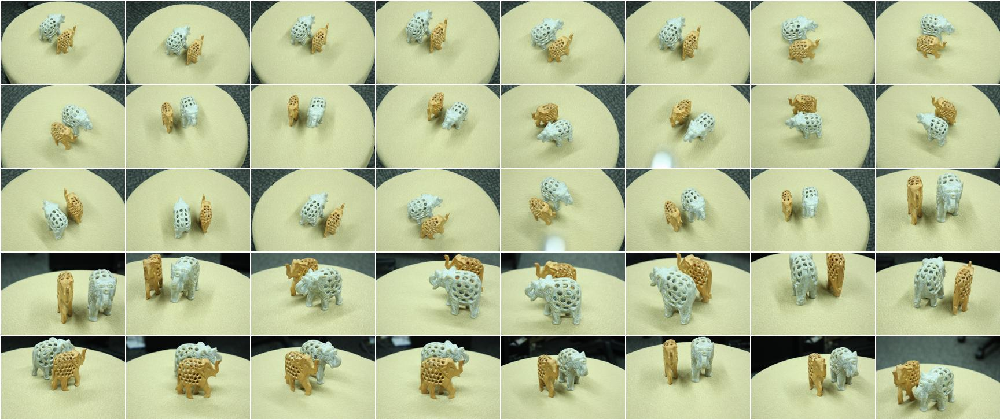
Thumbnail views of the 40 input images of two carved elephants on a flat plate, taken with a hand-held camera. Interestingly, there are many holes in each elephant's body, and through these holes we can see that each elephant is "pregnant with her baby".
PMVS2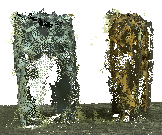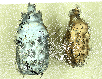
Two different views of the point cloud generated by PMVS2. It can be seen that the side parts of the elephants are reconstructed densely, while the rear parts are almost completely missing.
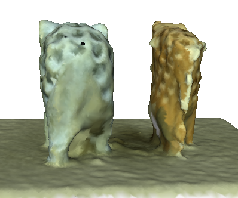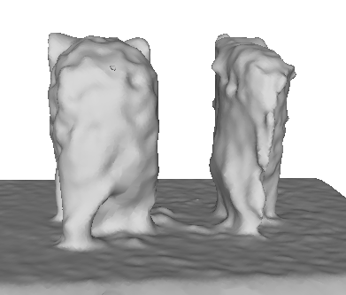
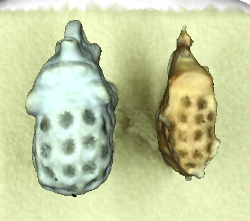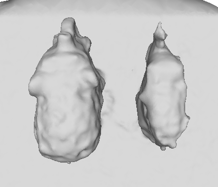
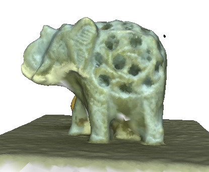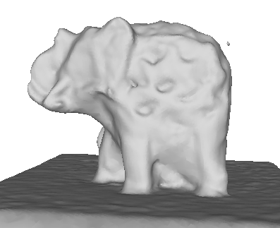
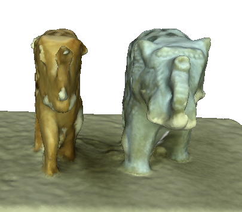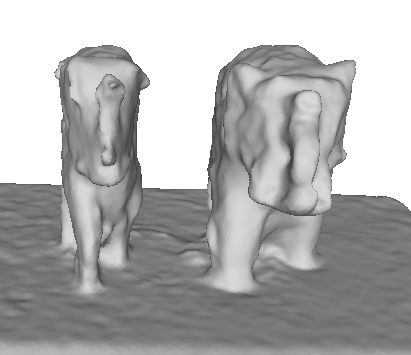
Four different views of the textured and non-textured models of the surface model generated by PMVS2 + PoissonRecon. PoissonRecon does a good job of filling the rear part of the elephants. However, it incorrectly fills the holes on the body of the elephants.
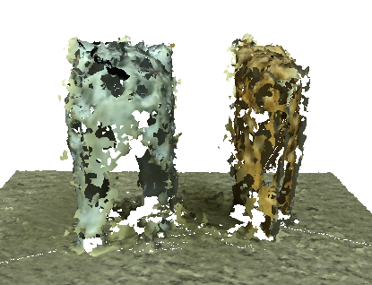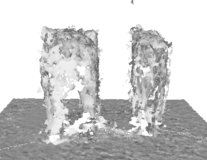
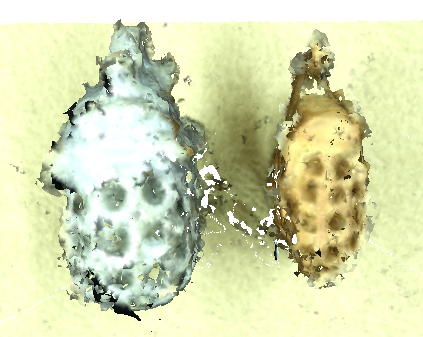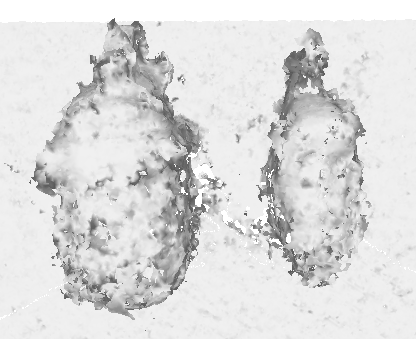
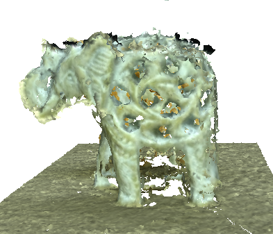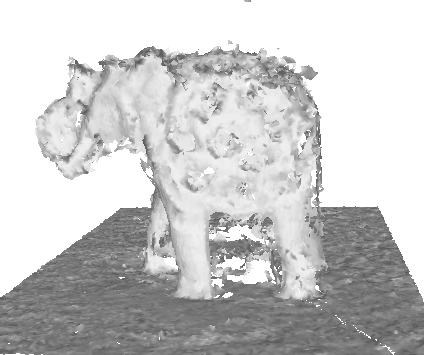
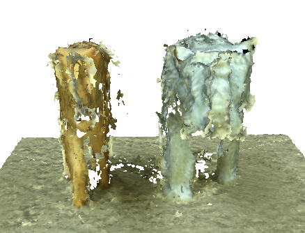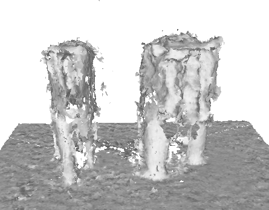
Four different views of the textured and non-textured models of the surface model generated by PMVS2 + BallPivoting. BallPivoting builds a surface conservatively --- just connecting existing points instead of doing interpolation aggressively as PoissonRecon. The resulted mesh left the whole rear part as a hole, while preserving the holes in the body. With these two surface reconstruction algorithms, we can see that the surface reconstruction from irregular distributed point cloud generated from multi-view stereo is hard, due to the loss of information in the point cloud representation.
IRAY (our system)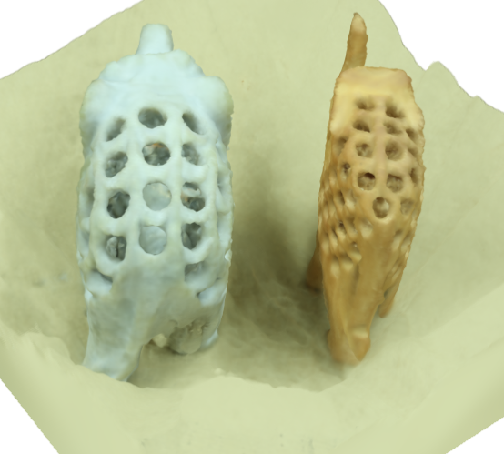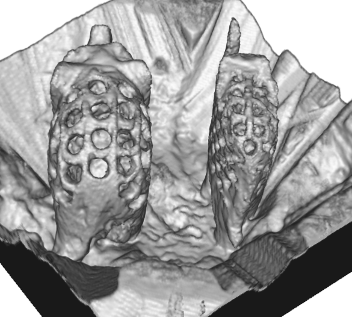
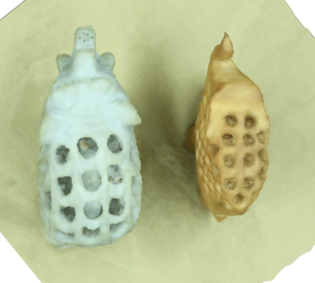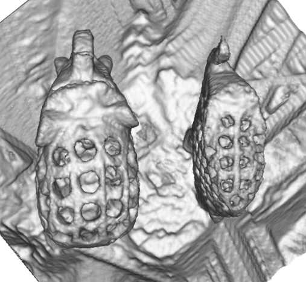
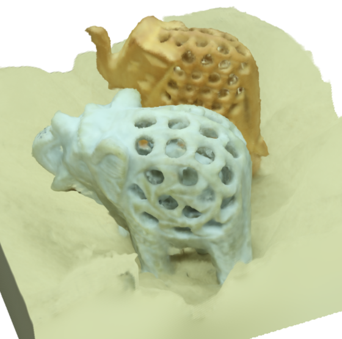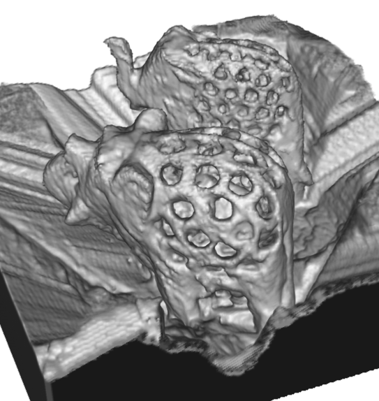
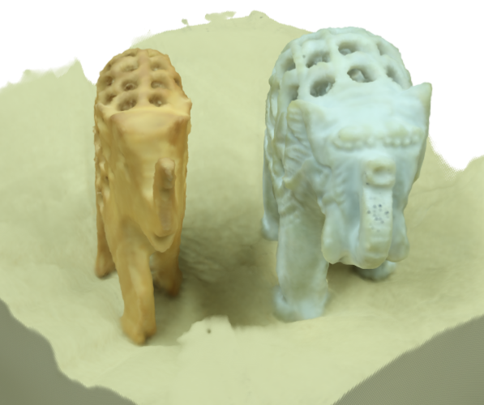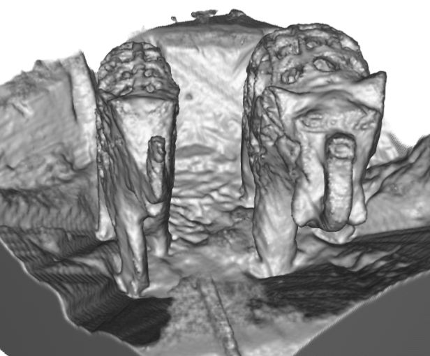
Four different views of the textured and non-textured models of the surface model generated by IRAY (our system). We can see that our approach can preserve the carved holes correctly, and reconstruct the baby elephants roughly. The rear parts of the elephants are reconstructed reasonably. This is because our algorithm better handles the occlusion relationship and is capable of reconstructing a region with a small number of views. Also the volumetric representation, as used in our system, contains more geometric information than unconnected points, which make the surface reconstruction much easier with a simple iso-thresholding algorithm (e.g., marching cube algorithm), compared with the point cloud based approach.
|
Last updated on Nov. 24, 2010